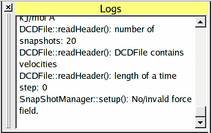

Index
LogView

The LogView is the main logging widget in BALLView. It provides all kind of informations, including warnings and errors. Its content can be cleared by using the menu entry "Edit-Clear Logs".
Index